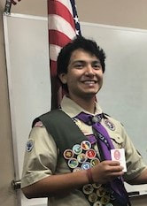

Eagles
The following members of Troop 374 have been awarded the rank of Eagle Scout, the highest rank attainable in Boy Scouts. The title of Eagle Scout is held for life, thus giving rise to the phrase "Once an Eagle, always an Eagle".
Requirements include earning at least 21 merit badges and demonstrating Scout Spirit through the Boy Scout Oath and Law, service, and leadership. This includes an extensive service project that the Scout plans, organizes, leads, and manages. Eagle Scouts are presented with a medal and a badge that visibly recognizes the accomplishments of the Scout. Additional recognition can be earned through Eagle Palms, awarded for completing additional tenure, leadership, and merit badge requirements.
2020
August 11

2019
December 12

November 7

October 3
